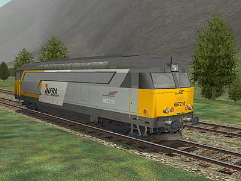
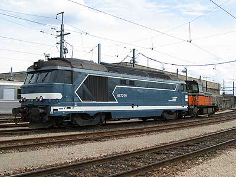
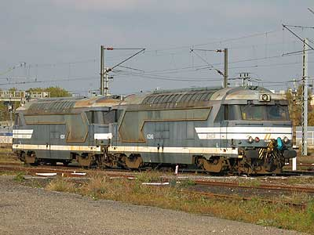
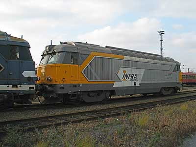

La BB 67200 version 
La BB 67210 pour MSTS a été réalisée par Florian Barrallon

Ferrovia - 09 Janvier 2004
BB 67200
Les BB 67000 sont cantonnées au service Fret à partir de 1975. Les années qui suivent voient un déclin des besoins et les programmes d'électrifications allègent leur charge de travail. Parallèlement, la création des lignes à grande vitesse crée de nouveaux besoins : l'entretien des lignes et le secours des TGV nécessitent des machines autonomes et équipées de la TVM.
Les BB 67000 sont donc modifiées en BB 67200 à partir de 1980 en plusieurs tranches suivant les besoins grandissants du réseau TGV qui s'étend.
Pas moins de 72 machines ont bénéficié de cette cure de jouvence s'accompagnant de nouveaux équipements : TVM, Radio Sol train et attelage Scharffenberg repliable pour certaines machines.
Le très faible kilométrage mensuel réalisé par ces machines, qui souvent attendent qu'on ait besoin d'elles, leur promet un avenir encore long.
Quelques données techniques
Constructeur : Brissonneau et Lotz
Chaîne de traction : Génératrice de courant continu,
moteurs de traction à collecteurs et double réduction mécanique
bloqué en PV (90 km/h)
Motorisation : moteur diésel SEMT-Pielstick 16 PA 4-185
1 moteur de traction SW 9209 entièrement suspendu par bogie
Puissance totale: 1470 kW (moteur thermique), 1240 kW à la jante.
Longueur : 17,090 m
Masse : 80,725t
Aptitude à l'UM avec les BB 67000, A1A-A1A 68000 et 68500.
Dispositions particulières: les locs 67219, 220, 250 et 251 disposent de connecteurs leur permettant de communiquer avec des voitures de mesure à l'instar des BB 622200 TVM.
Machine remarquable de la série
La 67210 a revêtu à titre d'essai la livrée Infrastructure au printemps 2002. Cette livrée basée sur la livrée Fret ne semble cependant pas avoir de suite. Pourtant l'état de nombreuses BB 67200 réclame bien un petit coup de pinceau...
Pour plus d'info :
Les BB 67200 sur Trains de France
La fiche BB 67200 sur Wikipedia
Fiche technique des BB 67200 de Florent Brisou
L'inventaire des BB 67200 sur Trains du Sud-Ouest

La BB 667229 à Villeneuve dépôt (07/09/2003)

Les BB 167249 et 167247 en UM de secours TGV à Fives-Lille (08/11/2003)

La BB 667210 à Fives-Lille (08/11/2003)
La BB 67200 version 
La BB 67210 pour MSTS a été réalisée par Florian Barrallon